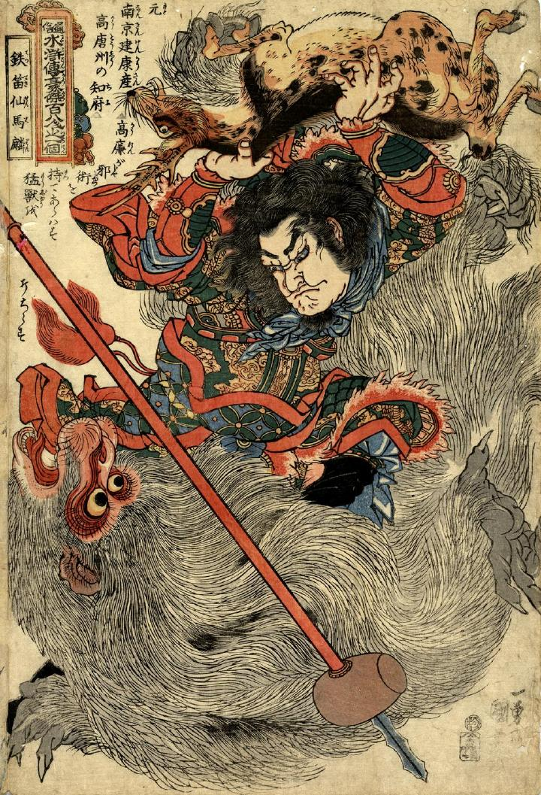

馬麟が鹿を両腕で担ぎ上げ、なおかつ、化物を足で踏みつけている。化物は白く大きな猿のようにみえる。
著作者：一勇斎国芳／出典：親書誌：U426_nichibunken_0247：通俗水滸伝豪傑百八人之一個鉄笛仙馬麟；ツウゾクスイコデンゴウケツヒャクハチニンノヒトリテッテキセンバリン／日付：2011／資源識別子：U426_nichibunken_0247_0001_0000
Copyright (c)2010- International Research Center for Japanese Studies, Kyoto, Japan. All rights reserved.